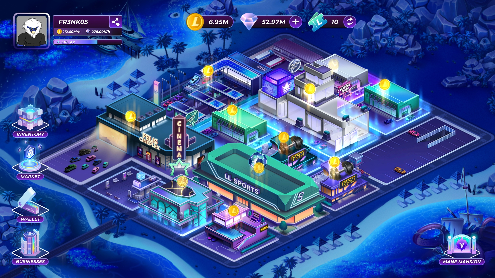
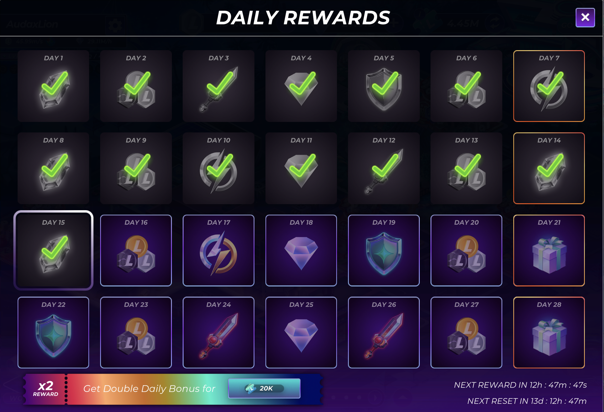
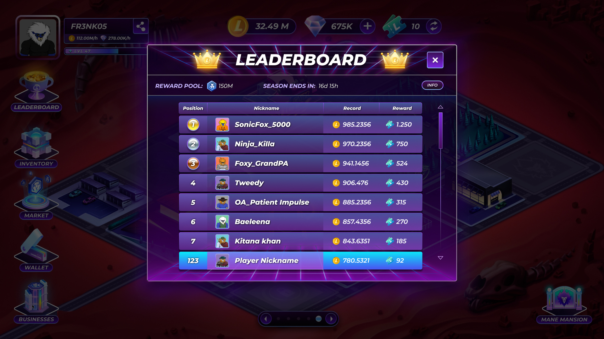

Mane City all'inizio sembra semplice. Entri nel gioco, vedi la città, i business, la mansion e le ricompense. Poi però inizi a notare che sotto c'è molto di più: Cash, Diamonds, Vouchers, furniture, upgrade, Daily Roar, NFT e Competitive Mode.
Di solito è qui che il gioco inizia a sembrare un po' confuso, ed è normale. Questa non vuole essere una guida ufficiale o un manuale completo. È la versione breve che darei a un amico appena entrato su Mane City.

Cosa guarderei per primo
Se iniziassi oggi, non proverei a capire tutto subito. Guarderei prima le risorse che vedo davanti e capirei cosa cambia quando faccio una piccola azione.
Il Cash serve a far avanzare la città. I Diamonds diventano più importanti quando iniziano a comparire booster e upgrade speciali. I Vouchers in genere hanno più senso più avanti, quando guardi alla Competitive Mode.
All'inizio la cosa più utile è evitare di spendere a caso. Già questo ti toglie molta confusione.
Perché non salterei il Daily Roar
Le ricompense giornaliere sono facili da ignorare perché all'inizio non sembrano spettacolari, ma la schermata stessa ti spiega già molto: il ritmo dei giorni, il cambio delle ricompense e il timer di reset rendono il sistema più facile da leggere.
Però, se partissi da zero, le tratterei come l'abitudine che tiene il ritmo del gioco. Le ricompense raccolte ogni giorno pesano più di quanto sembrino.
Ti aiutano anche a entrare nel flow: apri il gioco, raccogli, guardi cosa è cambiato e poi decidi se migliorare qualcosa.

Un ritmo semplice per la prima settimana
- Giorno 1: apri il gioco, controlla il Daily Roar e guarda con calma le cose che la schermata ti mostra senza forzare un piano.
- Giorno 2: fai uno o due piccoli upgrade e osserva davvero cosa cambia invece di immaginare la risposta.
- Giorno 3: leggi la parte sulla Competitive Mode solo quando la città base inizia ad avere senso.
Normal Mode e Competitive Mode hanno un ritmo diverso
La Normal Mode è la parte in cui starei più tranquillo. È il pezzo del gioco che dovrebbe sembrare stabile e familiare.
La Competitive Mode invece è diversa. È più rumorosa, più legata agli eventi e più facile da sovraccaricare se entri troppo presto. La guarderei prima e la giocherei dopo.
Se sei nuovo, la scelta più semplice è questa: prima impari, poi competi.
L'errore che eviterei
L'errore più grande è provare a capire ogni risorsa in una sola volta.
Non serve.
Quando il gioco smette di sembrare rumoroso, la parte più strategica diventa molto più facile da capire.
La mia routine semplice
Se partissi da zero, la mia routine sarebbe piccola: apro il gioco, controllo la ricompensa, guardo la città e spendo solo quando il motivo è chiaro.
Guarderei anche cosa è cambiato rispetto all'ultimo accesso. Di solito è lì che Mane City inizia a diventare più interessante.
Sembra meno un gioco di bottoni e più una piccola economia che premia un inizio lento.
La versione corta
Parti piano. Impara il ritmo. Spendi solo quando il motivo è chiaro.
